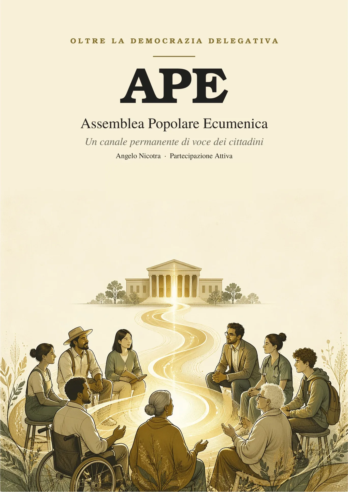

Con APE (Assemblea Popolare Ecumenica), Partecipazione Attiva lancia una nuova idea di Democrazia Partecipativa per rendere i cittadini parte attiva nella gestione politica del nostro Paese.
È la proposta di legge più importante del movimento: una riforma costituzionale che non aggiunge un partito né un candidato, ma uno strumento permanente attraverso cui ogni cittadino può obbligare le istituzioni ad ascoltare e a rispondere. Elaborata da Angelo Nicotra, Presidente di Partecipazione Attiva, ed è oggi proposta ufficiale del movimento.
Trascrizione del video
Da troppo tempo nessuno ascolta una voce. La tua. Per cambiare le cose non serve un salvatore. Non arriverà. Serviamo noi, tutti, alla pari. Possiamo essere i leader di noi stessi. Tocca a noi.
Il problema che l'APE vuole risolvere
Tra un'elezione e l'altra, per cinque anni, il cittadino non ha più voce. La democrazia italiana funziona per delega: si vota, si affida il mandato a chi è eletto, e fino al voto successivo la partecipazione è di fatto sospesa. Il modello ha retto finché esistevano i corpi intermedi — partiti di massa, sindacati, associazioni capillari — che tenevano aperto un canale permanente tra società e istituzioni. Quei corpi si sono dissolti.
Non è apatia: gli studi mostrano che è rifiuto consapevole di un sistema percepito come distante e non più influenzabile. L'APE non sostiene che «il sistema ha fallito, quindi va rimpiazzato» — sarebbe una tesi sbagliata e pericolosa. Sostiene qualcosa di più modesto e più solido: manca un meccanismo istituzionale che mantenga viva la voce dei cittadini nel tempo che intercorre tra le elezioni, e che obblighi le istituzioni a prendere posizione su quella voce invece di ignorarla.
Cos'è l'APE, e cosa non è
Prima di descrivere cosa fa l'APE, è più importante fissare con precisione cosa l'APE non fa e non potrà mai fare — è proprio da questi confini che dipende la sua legittimità costituzionale.
La sua forza è procedurale e reputazionale, non giuridico-sanzionatoria. Gli atti dell'Assemblea Popolare producono effetti esclusivamente procedurali: attivano il dovere dell'istituzione destinataria di esaminare l'istanza e di pronunciarsi con relazione motivata e pubblica. Non producono effetti normativi diretti né vincolano nel merito il contenuto delle leggi o i singoli voti parlamentari.
Il sorteggio, non l'elezione
I componenti dell'APE sono scelti per sorteggio fra i cittadini, mai per elezione — è la scelta più identitaria del progetto, e anche la più contro-intuitiva. L'elezione, per quanto democratica, produce inevitabilmente ciò che si vuole tenere fuori dall'APE: candidature, campagne, raccolta di consenso, schieramenti, carriere. Il sorteggio, al contrario, produce uno specchio statistico della popolazione: persone comuni che portano il punto di vista reale del Paese, non quello filtrato dagli apparati — lo stesso principio già in uso nei giudici popolari delle Corti d'Assise.
L'estrazione avviene dalle liste elettorali, con stratificazione per età, genere e territorio, così che lo specchio sia fedele. La partecipazione è volontaria nel senso che chi è estratto può rinunciare, ma la base di estrazione è l'intero corpo elettorale, non un registro di volontari.
Tre livelli orizzontali, nessuna gerarchia
L'APE si articola su tre livelli — comunale (APEC), regionale (APER) e nazionale (APEN) — ma questi non sono gradini di una scala: nessun livello comanda sull'altro. Sono microfoni accordati ciascuno al proprio interlocutore istituzionale: l'APEC parla al Comune, l'APER alla Regione, l'APEN allo Stato. Un'istanza sale di livello solo quando emerge in modo ricorrente su più territori diversi, o quando riguarda una materia di competenza esclusiva di un livello superiore — mai per decisione discrezionale di un "centro".
Nel canale che porta le istanze territoriali verso il livello nazionale, ogni territorio ha pari rappresentanza, indipendentemente dalla popolazione: è una garanzia contro la discriminazione, non un favore ai piccoli comuni — nessun cittadino deve pesare meno nel farsi ascoltare per il solo fatto di vivere in un luogo meno popoloso.
Il ciclo dell'istanza: voce, risposta, verifica, referendum
È il cuore operativo del progetto: come una richiesta nasce dal cittadino, percorre l'APE, raggiunge l'istituzione e ne ottiene una risposta — e cosa succede quando la risposta manca, è negativa, o resta sulla carta.
- Voce. Il cittadino deposita un'istanza; l'APE competente la riceve, la istruisce e la formalizza.
- Dovere di esame. L'istituzione destinataria ha il dovere di prenderla in carico e di non lasciarla cadere nel silenzio.
- Relazione motivata pubblica. L'istituzione si pronuncia con una relazione pubblica che dice sì o no e ne espone le ragioni.
- Verifica dell'attuazione. Entro un anno, l'istituzione riferisce pubblicamente sullo stato di attuazione di ciò che ha accolto.
- In caso di rifiuto o di stallo. Si apre la via del referendum propositivo: la decisione torna ai cittadini.
Il referendum propositivo è la leva dura del sistema — l'unica — attivabile solo a procedimento ordinario esaurito, e costruito in tre stadi: pronuncia parlamentare obbligatoria, raccolta firme a soglia oggettiva se il Parlamento non recepisce, e infine il referendum, valido senza quorum di partecipazione quando i voti favorevoli superano un quarto degli aventi diritto al voto — circa 12,5 milioni di "sì" su un corpo elettorale di 50 milioni: alta, ma raggiungibile da una mobilitazione reale, e immune al boicottaggio per assenteismo che affligge il quorum classico.
Indennità e permessi di lavoro
Perché la partecipazione sia davvero aperta a tutti — e non solo a chi può dedicarvi tempo gratuitamente — chi è sorteggiato riceve un'indennità e ha diritto a permessi di lavoro retribuiti. Senza copertura del reddito perduto, l'orizzontalità diventerebbe una finzione: l'assemblea si distorcerebbe verso i ceti abbienti, diventando lo specchio di chi può permetterselo invece che del Paese reale.
Una proposta distinta: l'abolizione del Senato
Il progetto include, su un binario separato e indipendente, anche l'abolizione del Senato — una riforma che non dipende in alcun modo dall'esistenza dell'APE, e viceversa. Le due cose restano volutamente slegate: se una delle due proposte si ferma in Parlamento, l'altra prosegue per conto suo.
Difese contro lo svuotamento e contro il carrozzone
Chi legge questo progetto ha due timori legittimi e opposti: che l'APE venga svuotata e resa innocua da una maggioranza ostile, oppure che cresca fino a diventare un nuovo carrozzone costoso e autoreferenziale. Una clausola di non-regressione impedisce che una legge ordinaria riduca le garanzie e i poteri di voce dell'APE al di sotto del livello costituzionale. Sul fronte opposto, un Collegio di Garanzia vigila su regolarità del sorteggio, trasparenza e congruità delle risposte — ma non ha potere sanzionatorio proprio: accerta, sospende in via cautelare gli atti viziati, e trasmette all'autorità competente, che è obbligata ad aprire il procedimento e concluderlo con atto motivato.
I costi, detti con onestà
Un organo di partecipazione ha un costo reale, dichiarato senza abbellimenti: indennità ai sorteggiati, permessi di lavoro, uffici territoriali, piattaforma digitale, trasparenza in streaming.
Cosa insegna il mondo
Il modello APE non nasce nel vuoto: dialoga con le esperienze di democrazia partecipativa già sperimentate altrove, prendendone i pregi ed evitandone gli errori.
| Esperienza | Cosa insegna all'APE |
|---|---|
| Irlanda — Citizens' Assembly (2016-2018) | Un'assemblea di cittadini sorteggiati può affrontare temi divisivi e produrre proposte che il sistema recepisce. Conferma la praticabilità del sorteggio. |
| Belgio — Ostbelgien (dal 2019) | Primo Consiglio dei cittadini permanente per legge, con dovere delle istituzioni di rispondere e di rendicontare l'attuazione a un anno. |
| Francia — Convention Citoyenne (2019-2020) | Lezione cautelativa: raccogliere la voce e poi disattenderla senza risposta chiara la fa fallire. Da qui l'obbligo di relazione motivata, la verifica a un anno e il referendum come ultima istanza. |
| Italia — giudici popolari | Il sorteggio per una funzione pubblica delicata è già nel nostro ordinamento e funziona. L'APE ne estende il principio. |
Va detto con chiarezza cosa la Convention Citoyenne francese dimostra e cosa no: non dimostra che il sorteggio non funziona — dimostra che il sorteggio senza obbligo di risposta e senza sbocco è teatro. L'APE aggiunge esattamente le cose che alla Francia mancavano.
La Rete APE
Partecipazione Attiva ha aperto una rete che invita singoli cittadini, associazioni, movimenti e comitati civici a condividere questi principi, con peso paritario per ogni soggetto aderente: nessuna gerarchia tra chi aderisce, indipendentemente dalla dimensione o dalla storia di ciascuno.
→ Scopri la Rete APE e come aderire
Il documento, in una frase
L'APE non promette che le proposte dei cittadini vengano approvate — sarebbe falso. Promette qualcosa di più solido e verificabile: che nessuna proposta possa essere diluita o sepolta nel silenzio, che ciò che è accolto sia poi verificato in pubblico, e che chi è respinto abbia una via d'uscita reale.
Non un salvatore. Noi. I leader di noi stessi. Il documento integrale, con l'articolato costituzionale completo e tutte le garanzie, è disponibile per il download in questa pagina.